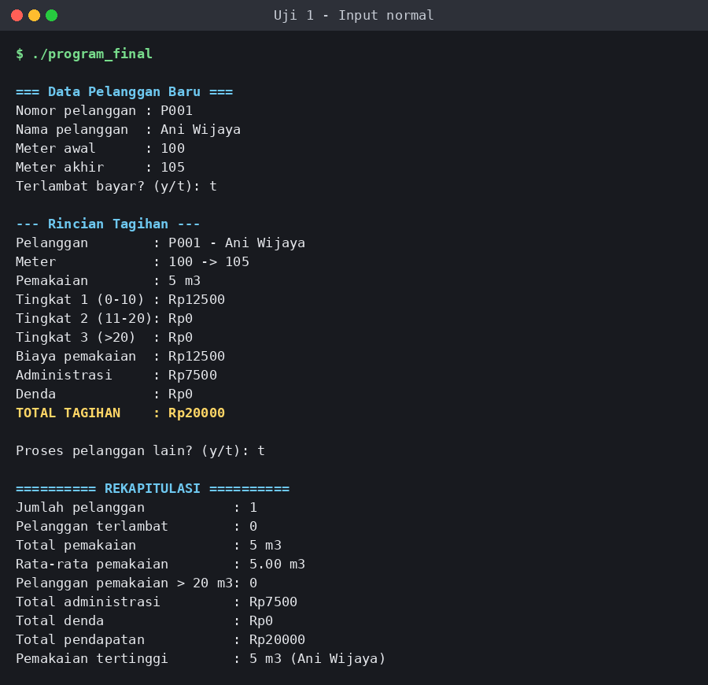
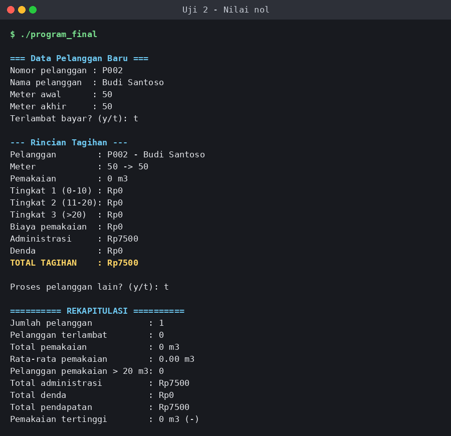
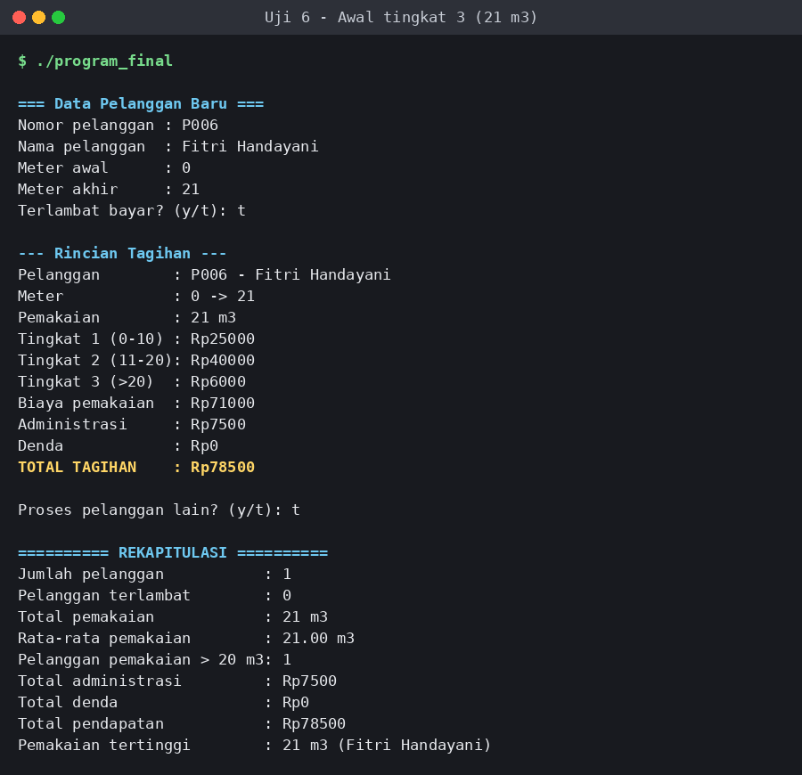
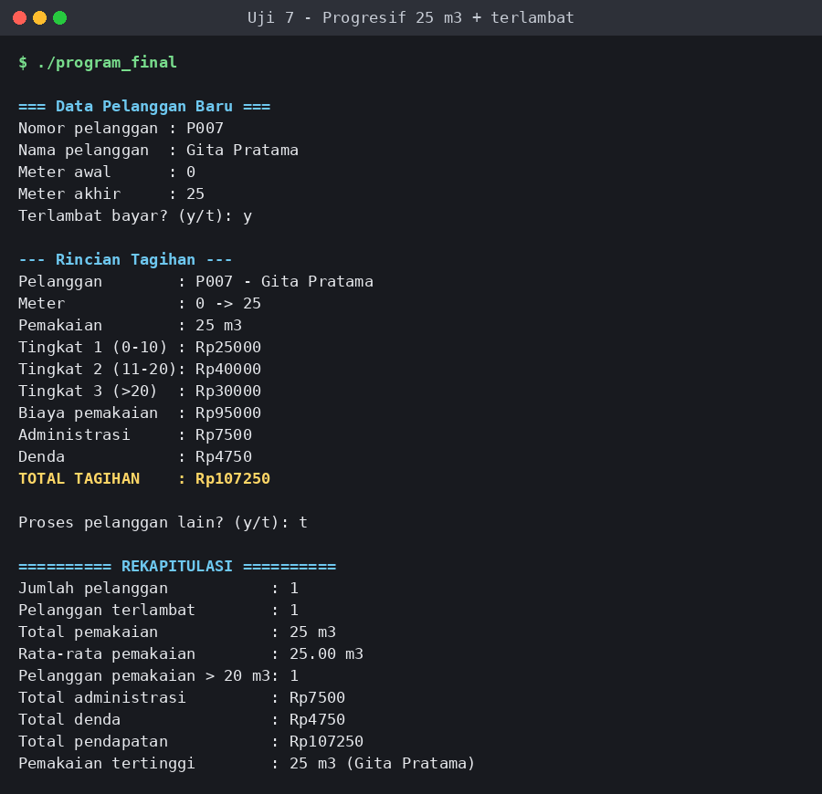
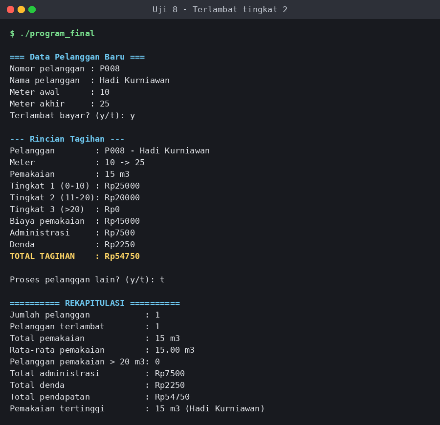
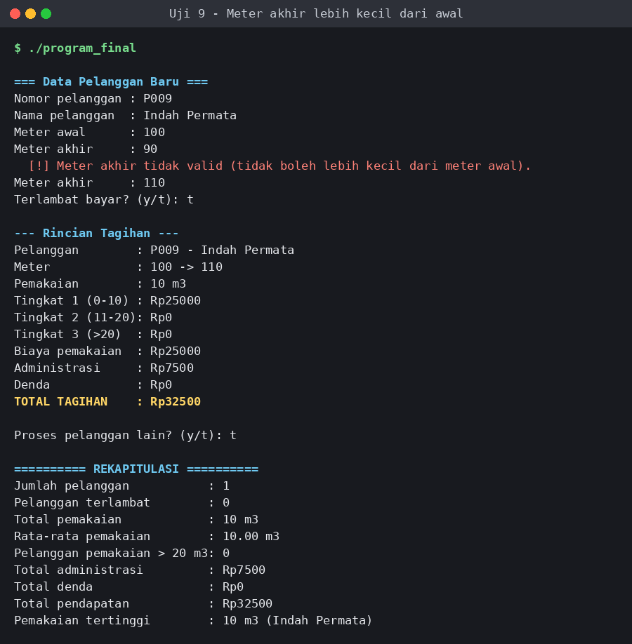
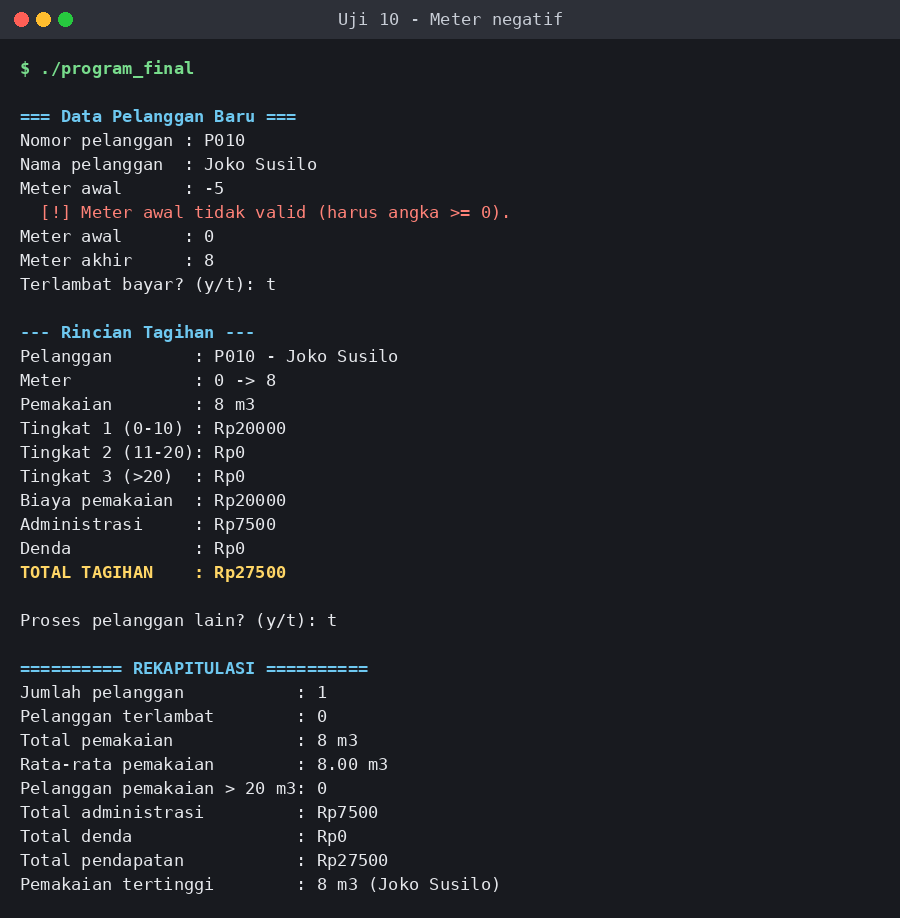
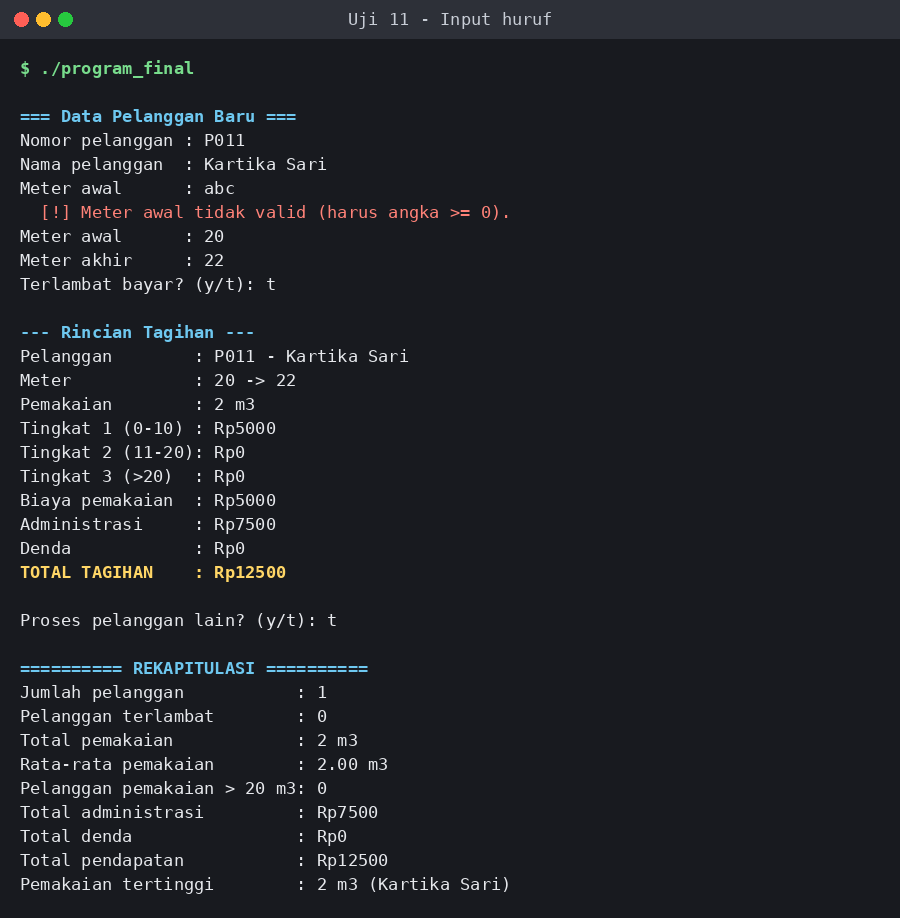

Program Terintegrasi
Proses integrasi
Kode Modul A dan Modul B digabung dalam satu perulangan while. Di setiap putaran, Modul A menghitung tagihan, lalu Modul B langsung memperbarui rekapitulasi dengan nilai yang sama. Setelah itu program menanyakan apakah petugas ingin lanjut; jika tidak, rekapitulasi ditampilkan.
Langkah integrasi:
- Variabel rekapitulasi Modul B dipindahkan ke bagian awal
main(), sebelum perulangan. - Input dan perhitungan Modul A ditempatkan di dalam perulangan.
- Modul B tidak lagi meminta input manual; ia memakai
pemakaian,denda, dantotalTagihandari Modul A. - Pilihan lanjut/berhenti ditambahkan di akhir perulangan, dengan validasi y/t.
- Rekapitulasi ditampilkan setelah perulangan selesai.
Pseudocode final
MULAI
inisialisasi semua penghitung dan total = 0
pemakaianTertinggi ← 0; pelangganTertinggi ← "-"
lanjut ← 'y'
SELAMA lanjut = 'y' LAKUKAN
// Modul A
BACA nomorPelanggan, namaPelanggan
ULANGI BACA meterAwal SAMPAI angka DAN meterAwal >= 0
ULANGI BACA meterAkhir SAMPAI angka DAN meterAkhir >= meterAwal
ULANGI BACA terlambat SAMPAI terlambat IN {y,t}
pemakaian ← meterAkhir - meterAwal
hitung biayaTingkat1, biayaTingkat2, biayaTingkat3 (tarif progresif)
biayaPemakaian ← jumlah ketiga tingkat
denda ← (terlambat) ? biayaPemakaian x 5 / 100 : 0
totalTagihan ← biayaPemakaian + BIAYA_ADMIN + denda
TAMPILKAN rincian tagihan
// Modul B
perbarui jumlah, total, pemakaian tertinggi
// Integrasi
ULANGI BACA lanjut SAMPAI lanjut IN {y,t}
AKHIR SELAMA
JIKA jumlahPelanggan > 0 MAKA rataRata ← totalPemakaian / jumlahPelanggan
TAMPILKAN rekapitulasi
SELESAI
Flowchart final
flowchart TD
A([Mulai]) --> B[Inisialisasi total = 0]
B --> C[[Modul A: hitung tagihan]]
C --> D[[Modul B: update rekap]]
D --> E[/Input lanjut y/t/]
E --> V{y atau t?}
V -- Tidak --> E
V -- Ya --> F{lanjut = y?}
F -- Ya --> C
F -- Tidak --> G[Hitung rata-rata]
G --> H[/Tampilkan rekapitulasi/]
H --> I([Selesai])
Rincian flowchart Modul A dan Modul B ada di halaman Flowchart.
Source code final
Memuat program_final.cpp ...
Hasil eksekusi








Tabel pengujian
| No. | Skenario | Data masukan | Hasil yang diharapkan | Hasil aktual (screenshot) | Status |
|---|---|---|---|---|---|
| 1 | Input normal | P001; Ani Wijaya; 100 → 105; t | Pemakaian 5 m³; tingkat 1 Rp12.500; denda Rp0; total Rp20.000 | Pemakaian 5 m³; tingkat 1 Rp12.500; denda Rp0; total Rp20.000 | Sesuai |
| 2 | Nilai nol | P002; Budi Santoso; 50 → 50; t | Pemakaian 0 m³; total Rp7.500; pelanggan tertinggi Budi Santoso | Pemakaian 0 m³; total Rp7.500; pemakaian tertinggi 0 m³ (-) | Tidak sesuai: nama pelanggan tertinggi tidak tercatat |
| 3 | Batas tingkat 1 | P003; Citra Lestari; 0 → 10; t | Pemakaian 10 m³; tingkat 1 Rp25.000; total Rp32.500 | Pemakaian 10 m³; tingkat 1 Rp25.000; total Rp32.500 | Sesuai |
| 4 | Awal tingkat 2 | P004; Dewi Rahma; 0 → 11; t | Pemakaian 11 m³; biaya Rp29.000; total Rp36.500 | Pemakaian 11 m³; biaya Rp29.000; total Rp36.500 | Sesuai |
| 5 | Batas tingkat 2 | P005; Eko Prasetyo; 0 → 20; t | Pemakaian 20 m³; biaya Rp65.000; total Rp72.500 | Pemakaian 20 m³; biaya Rp65.000; total Rp72.500 | Sesuai |
| 6 | Awal tingkat 3 | P006; Fitri Handayani; 0 → 21; t | Pemakaian 21 m³; biaya Rp71.000; total Rp78.500 | Pemakaian 21 m³; biaya Rp71.000; total Rp78.500 | Sesuai |
| 7 | Progresif + terlambat | P007; Gita Pratama; 0 → 25; y | Biaya Rp95.000; denda Rp4.750; total Rp107.250 | Biaya Rp95.000; denda Rp4.750; total Rp107.250 | Sesuai |
| 8 | Terlambat tingkat 2 | P008; Hadi Kurniawan; 10 → 25; y | Pemakaian 15 m³; biaya Rp45.000; denda Rp2.250; total Rp54.750 | Pemakaian 15 m³; biaya Rp45.000; denda Rp2.250; total Rp54.750 | Sesuai |
| 9 | Meter akhir < awal | P009; Indah Permata; 100 → 90 ditolak, lalu 110; t | 90 ditolak; pemakaian 10 m³; total Rp32.500 | 90 ditolak; pemakaian 10 m³; total Rp32.500 | Sesuai |
| 10 | Meter negatif | P010; Joko Susilo; -5 ditolak, lalu 0 → 8; t | -5 ditolak; pemakaian 8 m³; total Rp27.500 | -5 ditolak; pemakaian 8 m³; total Rp27.500 | Sesuai |
| 11 | Input huruf | P011; Kartika Sari; "abc" ditolak, lalu 20 → 22; t | "abc" ditolak; pemakaian 2 m³; total Rp12.500 | "abc" ditolak; pemakaian 2 m³; total Rp12.500 | Sesuai |
Trace table percabangan
Data sesuai Uji 7: P007 (Gita Pratama), pemakaian 25 m³, terlambat = y.
| Langkah | Variabel/proses | Kondisi atau perhitungan | Hasil |
|---|---|---|---|
| 1 | Input pelanggan | P007; Gita Pratama; meter 0 → 25; terlambat y | Data diterima |
| 2 | pemakaian | 25 - 0 | 25 m³ |
| 3 | Percabangan tingkat 1 | 25 ≤ 10 | Salah |
| 4 | Percabangan tingkat 2 | 25 ≤ 20 | Salah; masuk else |
| 5 | biayaTingkat1 | 10 × Rp2.500 | Rp25.000 |
| 6 | biayaTingkat2 | 10 × Rp4.000 | Rp40.000 |
| 7 | biayaTingkat3 | (25 - 20) × Rp6.000 | Rp30.000 |
| 8 | biayaPemakaian | 25.000 + 40.000 + 30.000 | Rp95.000 |
| 9 | statusTerlambat | terlambat = y | true |
| 10 | denda | 95.000 × 5 / 100 | Rp4.750 |
| 11 | totalTagihan | 95.000 + 7.500 + 4.750 | Rp107.250 |
Trace table perulangan
Setiap screenshot adalah proses pengujian terpisah dengan satu pelanggan. Nilai rekap berikut dicatat setelah satu iterasi pelanggan dan pilihan lanjut = t.
| Uji | pemakaian | jumlahPelanggan | totalPemakaian | rataRata | pemakaianTertinggi | jumlahTerlambat | jumlahDiAtas20 | totalAdmin | totalDenda | totalPendapatan | lanjut |
|---|---|---|---|---|---|---|---|---|---|---|---|
| Awal tiap uji | - | 0 | 0 | 0,00 | 0 (-) | 0 | 0 | Rp0 | Rp0 | Rp0 | y |
| 1 (P001) | 5 | 1 | 5 | 5,00 | 5 (Ani Wijaya) | 0 | 0 | Rp7.500 | Rp0 | Rp20.000 | t |
| 2 (P002) | 0 | 1 | 0 | 0,00 | 0 (-) | 0 | 0 | Rp7.500 | Rp0 | Rp7.500 | t |
| 3 (P003) | 10 | 1 | 10 | 10,00 | 10 (Citra Lestari) | 0 | 0 | Rp7.500 | Rp0 | Rp32.500 | t |
| 4 (P004) | 11 | 1 | 11 | 11,00 | 11 (Dewi Rahma) | 0 | 0 | Rp7.500 | Rp0 | Rp36.500 | t |
| 5 (P005) | 20 | 1 | 20 | 20,00 | 20 (Eko Prasetyo) | 0 | 0 | Rp7.500 | Rp0 | Rp72.500 | t |
| 6 (P006) | 21 | 1 | 21 | 21,00 | 21 (Fitri Handayani) | 0 | 1 | Rp7.500 | Rp0 | Rp78.500 | t |
| 7 (P007) | 25 | 1 | 25 | 25,00 | 25 (Gita Pratama) | 1 | 1 | Rp7.500 | Rp4.750 | Rp107.250 | t |
| 8 (P008) | 15 | 1 | 15 | 15,00 | 15 (Hadi Kurniawan) | 1 | 0 | Rp7.500 | Rp2.250 | Rp54.750 | t |
| 9 (P009) | 10 | 1 | 10 | 10,00 | 10 (Indah Permata) | 0 | 0 | Rp7.500 | Rp0 | Rp32.500 | t |
| 10 (P010) | 8 | 1 | 8 | 8,00 | 8 (Joko Susilo) | 0 | 0 | Rp7.500 | Rp0 | Rp27.500 | t |
| 11 (P011) | 2 | 1 | 2 | 2,00 | 2 (Kartika Sari) | 0 | 0 | Rp7.500 | Rp0 | Rp12.500 | t |
Temuan pengujian dan tindak lanjut
| Uji | Temuan pada screenshot | Tindak lanjut |
|---|---|---|
| 2 | Pemakaian 0 m³ menghasilkan tagihan Rp7.500, tetapi nama pelanggan tertinggi tampil sebagai "-". | Perbarui kondisi pencatatan pemakaian tertinggi agar pelanggan pertama tetap tercatat saat pemakaiannya 0 m³. |
| 9 | Meter akhir 90 lebih kecil dari meter awal 100, sehingga ditolak; input 110 diterima. | Validasi berjalan sesuai aturan; tidak perlu perbaikan. |
| 10 | Meter awal -5 ditolak; input 0 diterima. | Validasi berjalan sesuai aturan; tidak perlu perbaikan. |
| 11 | Input meter awal "abc" ditolak dan program menerima input angka berikutnya. | Pemulihan input berjalan sesuai harapan; tidak perlu perbaikan. |